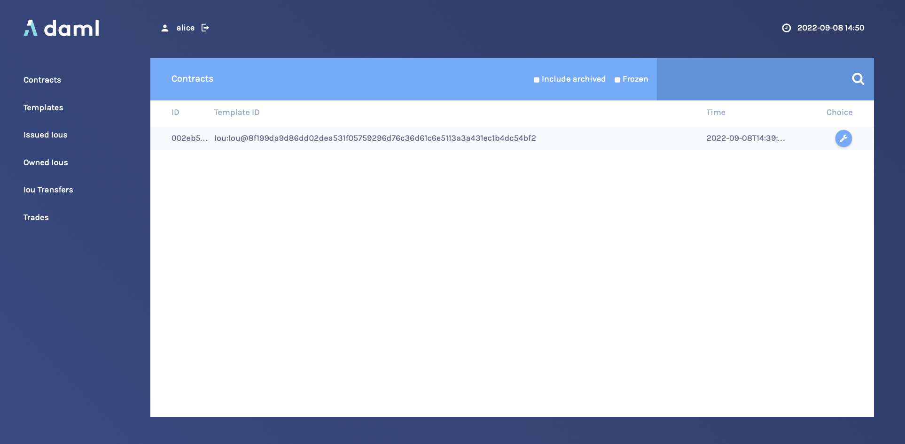
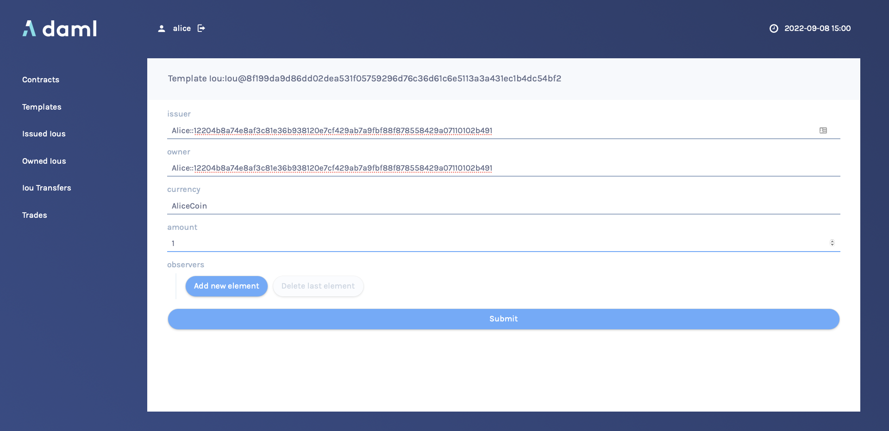
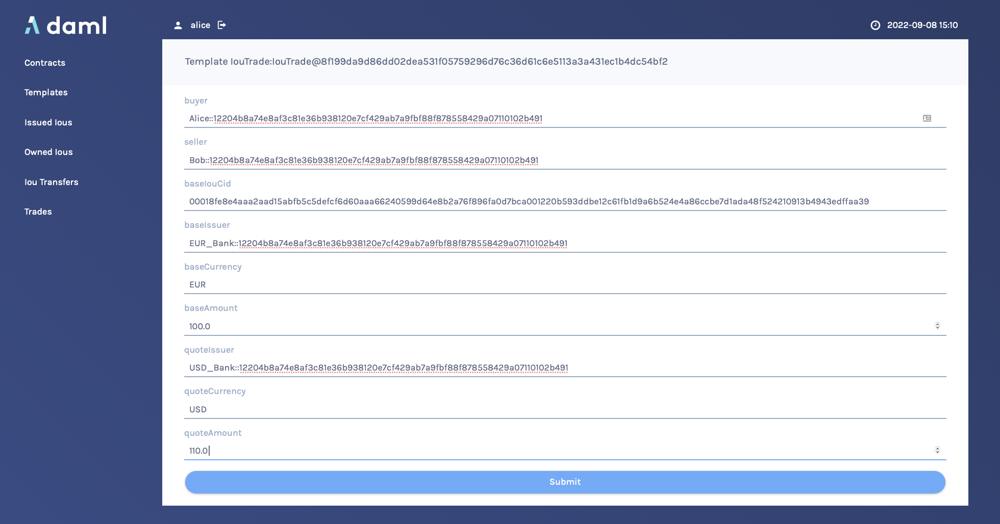
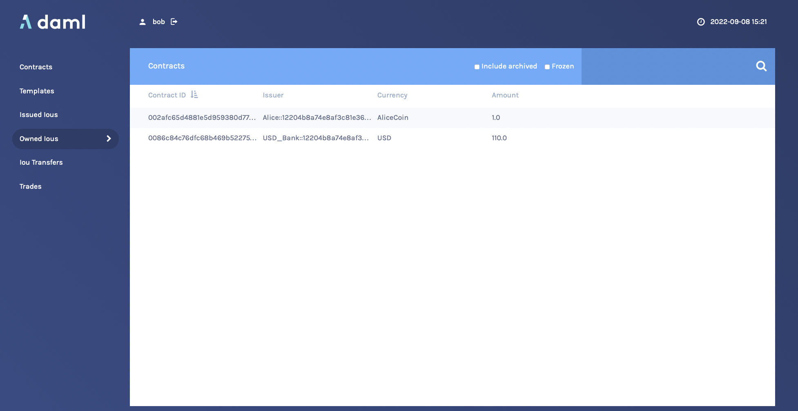

Daml IOU Quickstart Tutorial¶
In this guide, you will learn about developer tools and Daml applications by:
- developing a simple ledger application for issuing, managing, transferring and trading IOUs (“I Owe You!”)
- developing an integration layer that exposes some of the functionality via custom REST services
Prerequisites:
- You understand what an IOU is. If you are not sure, read the IOU tutorial overview.
- You have installed the SDK. See installation.
Download the Quickstart Application¶
You can get the quickstart application using the Daml assistant (daml):
Run
daml new quickstart --template quickstart-javaThis creates the
quickstart-javaapplication into a new folder calledquickstart.Run
cd quickstartto change into the new directory.
Folder Structure¶
The project contains the following files:
.
├── daml
│ ├── Iou.daml
│ ├── IouTrade.daml
│ ├── Main.daml
│ └── Tests
│ ├── Iou.daml
│ └── Trade.daml
├── daml.yaml
├── frontend-config.js
├── pom.xml
└── src
└── main
├── java
│ └── com
│ └── daml
│ └── quickstart
│ └── iou
│ └── IouMain.java
└── resources
└── logback.xml
daml.yamlis a Daml project config file used by the SDK to find out how to build the Daml project and how to run it.damlcontains the Daml code specifying the contract model for the ledger.daml/Testscontains test scripts for the Daml model.frontend-config.jsis a configuration file for the Navigator frontend.pom.xmlandsrc/main/javaconstitute a Java application that provides REST services to interact with the ledger.
You will explore these in more detail through the rest of this guide.
Understand IOUs¶
To run through this guide, you will need to understand what an IOU is. This section describes the properties of an IOU like a bank bill that make it useful as a representation and transfer of value.
A bank bill represents a contract between the owner of the bill and its issuer, the central bank. Historically, it is a bearer instrument - it gives anyone who holds it the right to demand a fixed amount of material value, often gold, from the issuer in exchange for the note.
To do this, the note must have certain properties. In particular, the British pound note shown below illustrates the key elements that are needed to describe money in Daml:

1) The Legal Agreement
For a long time, money was backed by physical gold or silver stored in a central bank. The British pound note, for example, represented a promise by the central bank to provide a certain amount of gold or silver in exchange for the note. This historical artifact is still represented by the following statement:
I promise to pay the bearer on demand the sum of five pounds.
The true value of the note comes from the fact that it physically represents a bearer right that is matched by an obligation on the issuer.
2) The Signature of the Counterparty
The value of a right described in a legal agreement is based on a matching obligation for a counterparty. The British pound note would be worthless if the central bank, as the issuer, did not recognize its obligation to provide a certain amount of gold or silver in exchange for the note. The chief cashier confirms this obligation by signing the note as a delegate for the Bank of England. In general, determining the parties that are involved in a contract is key to understanding its true value.
3) The Security Token
Another feature of the pound note is the security token embedded within the physical paper. It allows the note to be authenticated with limited effort by holding it against a light source. Even a third party can verify the note without requiring explicit confirmation from the issuer that it still acknowledges the associated obligations.
4) The Unique Identifier
Every note has a unique registration number that allows the issuer to track their obligations and detect duplicate bills. Once the issuer has fulfilled the obligations associated with a particular note, duplicates with the same identifier automatically become invalid.
5) The Distribution Mechanism
The note itself is printed on paper, and its legal owner is the person holding it. The physical form of the note allows the rights associated with it to be transferred to other parties that are not explicitly mentioned in the contract.
Run the Application Using Prototyping Tools¶
In this section, you will run the quickstart application and get introduced to the main tools for prototyping Daml:
To compile the Daml model, run
daml buildThis creates a DAR file (DAR is just the format that Daml compiles to) called
.daml/dist/quickstart-0.0.1.dar. The output should look like this:2022-09-08 14:33:41.65 [INFO] [build] Compiling quickstart to a DAR. 2022-09-08 14:33:42.90 [INFO] [build] Created .daml/dist/quickstart-0.0.1.dar
To run the sandbox (a lightweight local version of the ledger), run:
daml sandbox --port 6865
In a separate terminal run the following:
Upload the DAR file:
daml ledger upload-dar --host localhost --port 6865 .daml/dist/quickstart-0.0.1.dar
Run the init script:
daml script --ledger-host localhost --ledger-port 6865 --dar .daml/dist/quickstart-0.0.1.dar --script-name Main:initialize --output-file output.json
Try the Application¶
Now everything is running, you can try out the quickstart application:
Go to http://localhost:7500/. This is the Navigator, which you launched earlier.
On the login screen, select
alicefrom the dropdown. This logs you in asalice.This takes you to the contracts view:
This is showing you what contracts are currently active on the sandbox ledger and visible to
alice. You can see that there is a single such contract, in our case with Id002eb5..., created from a template calledIou:Iou@8f199da....Your contract ID will vary. The actual value doesn’t matter. We’ll refer to this contract as
002eb5in the rest of this document, and you’ll need to substitute your own value mentally.On the left-hand side, you can see what the pages the Navigator contains:
- Contracts
- Templates
- Issued Ious
- Owned Ious
- Iou Transfers
- Trades
Contracts and Templates are standard views, available in any application. The others are created just for this application, specified in the
frontend-config.jsfile.For information on creating custom Navigator views, see Customizable table views.
Click Templates to open the Templates page.
This displays all available contract templates. Instances of contracts (or just contracts) are created from these templates. The names of the templates are of the format module:template@hash. Including the hash disambiguates templates, even when identical module and template names are used between packages.
On the far right, you see the number of contracts that you can see for each template, if any, or
-for “no contract”.Try creating a contract from a template. Issue an Iou to yourself by clicking on the
Iou:Iou@8f199...row, filling it out as shown below (use the provided auto-complete feature for thePartyvalues inissuerandowner) and clicking Submit.On the left-hand side, click Issued Ious to go to that page. You can see the Iou you just issued yourself.
Now, try transferring this Iou to someone else. Click on your Iou, select
Iou_Transfer, selectBob::...as the new owner and hit Submit.Go to the Owned Ious page.
The screen shows the same contract
002eb5that you already saw on the Contracts page. It is an Iou for €100, issued byEUR_Bank::....Go to the Iou Transfers page. It shows the transfer of your recently issued Iou to Bob, but Bob has not accepted the transfer, so it is not settled.
This is an important part of Daml: nobody can be forced into owning an Iou, or indeed agreeing to any other contract. They must explicitly consent.
You could cancel the transfer by using the
IouTransfer_Cancelchoice within it, but for this walk-through, leave it alone for the time being.Try asking Bob to exchange your €100 for $110. To do so, you first have to show your Iou to Bob so that he can verify the settlement transaction, should he accept the proposal.
Go back to Owned Ious, open the Iou for €100 and click on the button
Iou_AddObserver. SelectBob::...as thenewObserver.Contracts in Daml are immutable, meaning they cannot be changed, only created and archived. If you head back to the Owned Ious screen, you can see that the Iou now has a new Contract ID. In our case, it’s
00018fe....To propose the trade, go to the Templates screen. Click on the
IouTrade:IouTrade@...template, fill in the form as shown below and submit the transaction. Remember to use the dropdown for the values ofbuyer,seller,baseIouCid,baseIssuer, andquoteIssuer.Go to the Trades page. It shows the just-proposed trade.
You are now going to switch user to Bob, so you can accept the trades you have just proposed. Start by clicking on the logout button next to the username, at the top of the screen. On the login page, select
bobfrom the dropdown.First, accept the transfer of the AliceCoin. Go to the Iou Transfers page, click on the row of the transfer, and click
IouTransfer_Accept, then Submit.Go to the Owned Ious page. It now shows the AliceCoin.
It also shows an Iou for $110 issued by
USD_Bank::.... This matches the trade proposal you made earlier as Alice. Remember the first few characters of its Contract ID (in our case0086c84).Settle the trade. Go to the Trades page, and click on the row of the proposal. Accept the trade by clicking
IouTrade_Accept. In the popup, select the Contract ID you just noted from the dropdown as thequoteIouCid, then click Submit.The two legs of the transfer are now settled atomically in a single transaction. The trade either fails or succeeds as a whole.
Privacy is an important feature of Daml. You can check that Alice and Bob’s privacy relative to the Banks was preserved.
To do this, log out, then log in as
us, which maps toUSD_Bank::....On the Contracts page, select Include archived. The page now shows all the contracts that
USD_Bank::...has ever known about.There are just five contracts:
- Three contracts created on startup:
- A self-issued Iou for $110.
- The IouTransfer to transfer that Iou to Bob
- The resulting Iou owned by Bob.
- The transfer of Bob’s Iou to Alice that happened as part of the trade. Note that this is a transient contract that got archived in the same transaction it got created in.
- The new $110 Iou owned by Alice. This is the only active contract.
Importantly,
USD_Bank::...does not know anything about the trade or the EUR-leg. It has no idea what was exchanged for those $110, or indeed if anything was exchanged at all. For more information on privacy, refer to the Daml Ledger Model.Note
USD_Bank::...does know about an intermediate IouTransfer contract that was created and consumed as part of the atomic settlement in the previous step. Since that contract was never active on the ledger, it is not shown in Navigator. You will see how to view a complete transaction graph, including who knows what, in Test Using Daml Script below.- Three contracts created on startup:
Get Started with Daml¶
The contract model specifies the possible contracts, as well as the allowed transactions on the ledger, and is written in Daml.
The core concept in Daml is a contract template - you used them earlier to create contracts. Contract templates specify:
- a type of contract that may exist on the ledger, including a corresponding data type
- the signatories, who need to agree to the creation of a contract of that type
- the rights or choices given to parties by a contract of that type
- constraints or conditions on the data on a contract
- additional parties, called observers, who can see the contract
For more information about Daml Ledgers, consult Daml Ledger Model for an in-depth technical description.
Develop with Daml Studio¶
Take a look at the Daml that specifies the contract model in the quickstart application. The core template is Iou.
- Open Daml Studio, a Daml IDE based on VS Code, by running
daml studiofrom the root of your project. - Using the explorer on the left, open
daml/Iou.daml.
The first (uncommented, non-empty) line specifies the module name:
module Iou where
Next, a template called Iou is declared together with its datatype. This template has five fields:
template Iou
with
issuer : Party
owner : Party
currency : Text
amount : Decimal
observers : [Party]
Conditions for the creation of a contract are specified using the ensure and signatory keywords:
ensure amount > 0.0
signatory issuer, owner
In this case, there are two conditions:
- An
Ioucan only be created if it is authorized by bothissuerandowner. - The
amountneeds to be positive.
Earlier, as Alice, you authorized the creation of an Iou. The amount was 1.0, and Alice was both issuer and owner, so both conditions were satisfied, and you could successfully create the contract.
To see this in action, go back to the Navigator and try to create the same Iou again, but with Bob as owner (with Alice as issuer). It will not work. Note that the Navigator shows success an failures as a small icon in the top right, as highlighted here (it would be a small “v” for success):
Observers are specified using the observer keyword:
observer observers
Here, observer is the keyword and observers refers to the field of the template.
Next, the rights or choices are defined, in this case with owner as the controller:
choice Iou_Split : (IouCid, IouCid)
with
splitAmount: Decimal
controller owner
do
let restAmount = amount - splitAmount
splitCid <- create this with amount = splitAmount
restCid <- create this with amount = restAmount
return (splitCid, restCid)
choice Iou_Merge : IouCid
with
otherCid: IouCid
controller owner
do
otherIou <- fetch otherCid
-- Check the two IOU's are compatible
assert (
currency == otherIou.currency &&
owner == otherIou.owner &&
issuer == otherIou.issuer
)
-- Retire the old Iou
archive otherCid
-- Return the merged Iou
create this with amount = amount + otherIou.amount
choice Iou_Transfer : ContractId IouTransfer
with
newOwner : Party
controller owner
do create IouTransfer with iou = this; newOwner
choice Iou_AddObserver : IouCid
with
newObserver : Party
controller owner
do create this with observers = newObserver :: observers
choice Iou_RemoveObserver : IouCid
with
oldObserver : Party
controller owner
do create this with observers = filter (/= oldObserver) observers
Thus, owner has the right to:
- Split the Iou.
- Merge it with another one differing only on
amount. - Initiate a transfer.
- Add and remove observers.
The Iou_Transfer choice above takes a parameter called newOwner and creates a new IouTransfer contract and returns its ContractId. It is important to know that, by default, choices consume the contract on which they are exercised. Consuming, or archiving, makes the contract no longer active. So the IouTransfer replaces the Iou.
A more interesting choice is IouTrade_Accept. To look at it, open IouTrade.daml.
choice IouTrade_Accept : (IouCid, IouCid)
with
quoteIouCid : IouCid
controller seller
do
baseIou <- fetch baseIouCid
baseIssuer === baseIou.issuer
baseCurrency === baseIou.currency
baseAmount === baseIou.amount
buyer === baseIou.owner
quoteIou <- fetch quoteIouCid
quoteIssuer === quoteIou.issuer
quoteCurrency === quoteIou.currency
quoteAmount === quoteIou.amount
seller === quoteIou.owner
quoteIouTransferCid <- exercise quoteIouCid Iou_Transfer with
newOwner = buyer
transferredQuoteIouCid <- exercise quoteIouTransferCid IouTransfer_Accept
baseIouTransferCid <- exercise baseIouCid Iou_Transfer with
newOwner = seller
transferredBaseIouCid <- exercise baseIouTransferCid IouTransfer_Accept
return (transferredQuoteIouCid, transferredBaseIouCid)
This choice uses the === operator from the Daml Standard Library to check pre-conditions. The standard library is imported using import DA.Assert at the top of the module.
Then, it composes the Iou_Transfer and IouTransfer_Accept choices to build one big transaction. In this transaction, buyer and seller exchange their Ious atomically, without disclosing the entire transaction to all parties involved.
The Issuers of the two Ious, which are involved in the transaction because they are signatories on the Iou and IouTransfer contracts, only get to see the sub-transactions that concern them, as we saw earlier.
For a deeper introduction to Daml, consult the Daml Reference.
Test Using Daml Script¶
You can check the correct authorization and privacy of a contract model using scripts: tests that are written in Daml.
Scripts are a linear sequence of transactions that is evaluated using the same consistency, conformance and authorization rules as it would be on the full ledger server or the sandbox ledger. They are integrated into Daml Studio, which can show you the resulting transaction graph, making them a powerful tool to test and troubleshoot the contract model.
To take a look at the scripts in the quickstart application, open daml/Tests/Trade.daml in Daml Studio.
A script test is defined with trade_test = script do. The submit function takes a submitting party and a transaction, which is specified the same way as in contract choices.
The following block, for example, issues an Iou and transfers it to Alice:
-- Banks issue IOU transfers.
iouTransferAliceCid <- submit eurBank do
createAndExerciseCmd
Iou with
issuer = eurBank
owner = eurBank
currency = "EUR"
amount = 100.0
observers = []
Iou_Transfer with
newOwner = alice
Compare the script with the initialize script in daml/Main.daml. You will see that the script you used to initialize the sandbox is an initial segment of the trade_test script. The latter adds transactions to perform the trade you performed through Navigator, and a couple of transactions in which expectations are verified.
After a short time, the text Script results should appear above the test. Click on it (in daml/Tests/Trade.daml) to open the visualization of the resulting ledger state.
Each row shows a contract on the ledger. The last four columns show which parties know of which contracts. The remaining columns show the data on the contracts. You can see past contracts by checking the Show archived box at the top. Click the adjacent Show transaction view button to switch to a view of the entire transaction tree.
In the transaction view, transaction 6 is of particular interest, as it shows how the Ious are exchanged atomically in one transaction. The lines starting disclosed to (since) show that the Banks do indeed not know anything they should not:
TX 6 1970-01-01T00:00:00Z (Tests.Trade:71:14)
#6:0
│ disclosed to (since): 'Alice' (6), 'Bob' (6)
└─> 'Bob' exercises IouTrade_Accept on #5:0 (IouTrade:IouTrade)
with
quoteIouCid = #3:1
children:
#6:1
│ disclosed to (since): 'Alice' (6), 'Bob' (6), 'EUR_Bank' (6)
└─> fetch #4:1 (Iou:Iou)
#6:2
│ disclosed to (since): 'Alice' (6), 'Bob' (6), 'USD_Bank' (6)
└─> fetch #3:1 (Iou:Iou)
#6:3
│ disclosed to (since): 'Alice' (6), 'Bob' (6), 'USD_Bank' (6)
└─> 'Bob' exercises Iou_Transfer on #3:1 (Iou:Iou)
with
newOwner = 'Alice'
children:
#6:4
│ consumed by: #6:5
│ referenced by #6:5
│ disclosed to (since): 'Alice' (6), 'Bob' (6), 'USD_Bank' (6)
└─> create Iou:IouTransfer
with
iou =
(Iou:Iou with
issuer = 'USD_Bank';
owner = 'Bob';
currency = "USD";
amount = 110.0000000000;
observers = []);
newOwner = 'Alice'
#6:5
│ disclosed to (since): 'Alice' (6), 'Bob' (6), 'USD_Bank' (6)
└─> 'Alice' exercises IouTransfer_Accept on #6:4 (Iou:IouTransfer)
children:
#6:6
│ disclosed to (since): 'Alice' (6), 'Bob' (6), 'USD_Bank' (6)
└─> create Iou:Iou
with
issuer = 'USD_Bank';
owner = 'Alice';
currency = "USD";
amount = 110.0000000000;
observers = []
#6:7
│ disclosed to (since): 'Alice' (6), 'Bob' (6), 'EUR_Bank' (6)
└─> 'Alice' exercises Iou_Transfer on #4:1 (Iou:Iou)
with
newOwner = 'Bob'
children:
#6:8
│ consumed by: #6:9
│ referenced by #6:9
│ disclosed to (since): 'Alice' (6), 'Bob' (6), 'EUR_Bank' (6)
└─> create Iou:IouTransfer
with
iou =
(Iou:Iou with
issuer = 'EUR_Bank';
owner = 'Alice';
currency = "EUR";
amount = 100.0000000000;
observers = ['Bob']);
newOwner = 'Bob'
#6:9
│ disclosed to (since): 'Alice' (6), 'Bob' (6), 'EUR_Bank' (6)
└─> 'Bob' exercises IouTransfer_Accept on #6:8 (Iou:IouTransfer)
children:
#6:10
│ disclosed to (since): 'Alice' (6), 'Bob' (6), 'EUR_Bank' (6)
└─> create Iou:Iou
with
issuer = 'EUR_Bank';
owner = 'Bob';
currency = "EUR";
amount = 100.0000000000;
observers = []
The submit function used in this script tries to perform a transaction and fails if any of the ledger integrity rules are violated. There is also a submitMustFail function, which checks that certain transactions are not possible. This is used in daml/Tests/Iou.daml, for example, to confirm that the ledger model prevents double spends.
Integrate With the Ledger¶
A distributed ledger only forms the core of a full Daml application.
To build automations and integrations around the ledger, Daml has language bindings for the Ledger API in several programming languages.
To compile the Java integration for the quickstart application, we first need to run the Java codegen on the DAR we built before:
daml codegen java
Once the code has been generated (into target/generated-sources per the instructions in daml.yaml), we can compile it using:
mvn compile
Now, start the Java integration with:
mvn exec:java@run-quickstart -Dparty=$(cat output.json | sed 's/\[\"//' | sed 's/".*//')
Note that this step requires that the sandbox started earlier is still running. If it is not, you’ll have to run the daml sandbox and daml script commands again to get an output.json in sync with the new state of the sandbox (party names can change with each sandbox restart).
The application provides REST services on port 8080 to perform basic operations on behalf on Alice. For example, check that:
curl http://localhost:8080/iou
returns, for a newly-created sandbox (where you have just run the init script to get the output.json file), something like:
{"0":{"issuer":"EUR_Bank::NAMESPACE","owner":"Alice::NAMESPACE","currency":"EUR","amount":100.0000000000,"observers":[]}}
If you still have the same sandbox running against which you have run the Navigator steps above, the output might look more like:
{"0":{"issuer":"Alice::NAMESPACE","owner":"Bob::NAMESPACE","currency":"AliceCoin","amount":1.0000000000,"observers":[]},"1":{"issuer":"USD_Bank::NAMESPACE","owner":"Alice::NAMESPACE","currency":"USD","amount":110.0000000000,"observers":[]}}
To start the same application on another port, use the command-line parameter -Drestport=PORT. To start it for another party, use -Dparty=PARTY. For example, to start the application for Bob on 8081, run:
mvn exec:java@run-quickstart -Drestport=8081 -Dparty=Bob$(cat output.json | sed 's/\[\"//' | sed 's/".*//')
The following REST services are included:
GETonhttp://localhost:8080/ioulists all active Ious, and their Ids.Note that the Ids exposed by the REST API are not the ledger contract Ids, but integers. You can open the address in your browser or run
curl -X GET http://localhost:8080/iou.GETonhttp://localhost:8080/iou/IDreturns the Iou with IdID.For example, to get the content of the Iou with Id 0, run:
curl -X GET http://localhost:8080/iou/0PUTonhttp://localhost:8080/ioucreates a new Iou on the ledger.To create another AliceCoin, run:
curl -X PUT -d '{"issuer":"Alice::NAMESPACE","owner":"Alice::NAMESPACE","currency":"AliceCoin","amount":1.0,"observers":[]}' http://localhost:8080/iou
Note that you have to replace
NAMESPACEwith the real namespace assigned by the sandbox; you can find it inoutput.json:ns=$(cat output.json | sed 's/\[\"Alice:://' | sed 's/".*//'); curl -X PUT -d "$(printf '{"issuer":"Alice::%s","owner":"Alice::%s","currency":"AliceCoin","amount":1.0,"observers":[]}' $ns $ns)" http://localhost:8080/iouPOSTonhttp://localhost:8080/iou/ID/transfertransfers the Iou with IdID.Check the index of your new AliceCoin by listing all active Ious. If you have just run the init script, it will be
0; if you have run the Navigator section, it will likely be2. Once you have the index, you can run:ns=$(cat output.json | sed 's/\[\"Alice:://' | sed 's/".*//'); curl -X POST -d "{\"newOwner\":\"Bob::${ns}\"}" http://localhost:8080/iou/0/transferto transfer it to Bob. If it’s not
0, just replace the0iniou/0in the above command.
The automation is based on the Java bindings and the output of the Java code generator, which are included as a Maven dependency and Maven plugin respectively in the pom.xml file created by the template:
<dependency>
<groupId>com.daml</groupId>
<artifactId>bindings-rxjava</artifactId>
<version>__VERSION__</version>
<exclusions>
<exclusion>
<groupId>com.google.protobuf</groupId>
<artifactId>protobuf-lite</artifactId>
</exclusion>
</exclusions>
</dependency>
It consists of the application in file IouMain.java. It uses the class Iou from Iou.java, which is generated from the Daml model with the Java code generator. The Iou class provides better serialization and de-serialization to JSON via gson. Looking at src/main/java/com/daml/quickstart/iou/IouMain.java:
A connection to the ledger is established using a
DamlLedgerClientobject.// Create a client object to access services on the ledger. DamlLedgerClient client = DamlLedgerClient.newBuilder(ledgerhost, ledgerport).build(); // Connects to the ledger and runs initial validation. client.connect();
An in-memory contract store is initialized. This is intended to provide a live view of all active contracts, with mappings between ledger and external Ids.
ConcurrentHashMap<Long, Iou> contracts = new ConcurrentHashMap<>(); BiMap<Long, Iou.ContractId> idMap = Maps.synchronizedBiMap(HashBiMap.create()); AtomicReference<LedgerOffset> acsOffset =
The Active Contracts Service (ACS) is used to quickly build up the contract store to a recent state.
.getActiveContractSetClient() .getActiveContracts(iouFilter, true) .blockingForEach( response -> { response .getOffset() .ifPresent(offset -> acsOffset.set(new LedgerOffset.Absolute(offset))); response.getCreatedEvents().stream() .map(Iou.Contract::fromCreatedEvent) .forEach( contract -> { long id = idCounter.getAndIncrement(); contracts.put(id, contract.data); idMap.put(id, contract.id); }); });
blockingForEachis used to ensure that the contract store is consistent with the ledger state at the latest offset observed by the client.The Transaction Service is wired up to update the contract store on occurrences of
ArchiveEventandCreateEventfor Ious. SincegetTransactionsis called without end offset, it will stream transactions indefinitely, until the application is terminated.client .getTransactionsClient() .getTransactions(acsOffset.get(), iouFilter, true) .forEach( t -> { for (Event event : t.getEvents()) { if (event instanceof CreatedEvent) { CreatedEvent createdEvent = (CreatedEvent) event; long id = idCounter.getAndIncrement(); Iou.Contract contract = Iou.Contract.fromCreatedEvent(createdEvent); contracts.put(id, contract.data); idMap.put(id, contract.id); } else if (event instanceof ArchivedEvent) { ArchivedEvent archivedEvent = (ArchivedEvent) event; long id = idMap.inverse().get(new Iou.ContractId(archivedEvent.getContractId())); contracts.remove(id); idMap.remove(id); } } });
Commands are submitted via the Command Submission Service.
return client .getCommandSubmissionClient() .submit( UUID.randomUUID().toString(), "IouApp", UUID.randomUUID().toString(), party, Optional.empty(), Optional.empty(), Optional.empty(), Collections.singletonList(c)) .blockingGet(); }
You can find examples of
ExerciseCommandandCreateCommandinstantiation in the bodies of thetransferandiouendpoints, respectively.ExerciseCommand¶ExerciseCommand exerciseCommand = contractId.exerciseIou_Transfer(m.get("newOwner").toString()); submit(client, party, exerciseCommand);
CreateCommand¶CreateCommand iouCreate = iou.create(); submit(client, party, iouCreate);
The rest of the application sets up the REST services using Spark Java, and does dynamic package Id detection using the Package Service. The latter is useful during development when package Ids change frequently.
For a discussion of ledger application design and architecture, take a look at Application Architecture Guide.
Next Steps¶
Great - you’ve completed the quickstart guide!
Some steps you could take next include:
- Explore examples for guidance and inspiration.
- Learn Daml.
- Language reference.
- Learn more about application development.
- Learn about the conceptual models behind Daml.